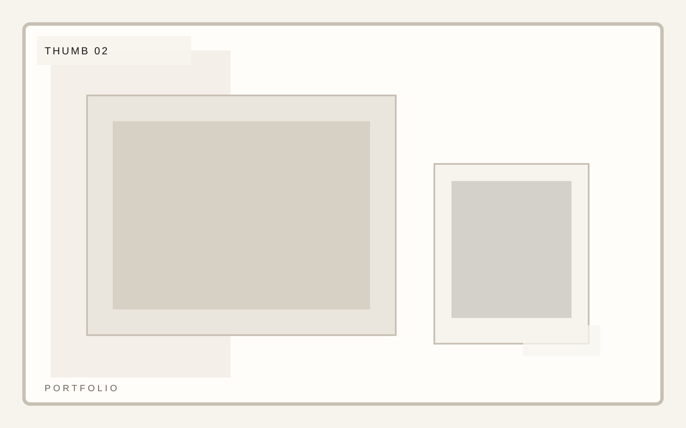
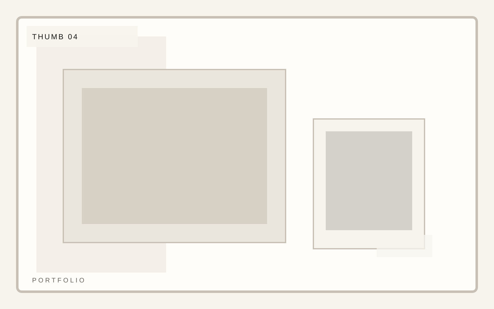
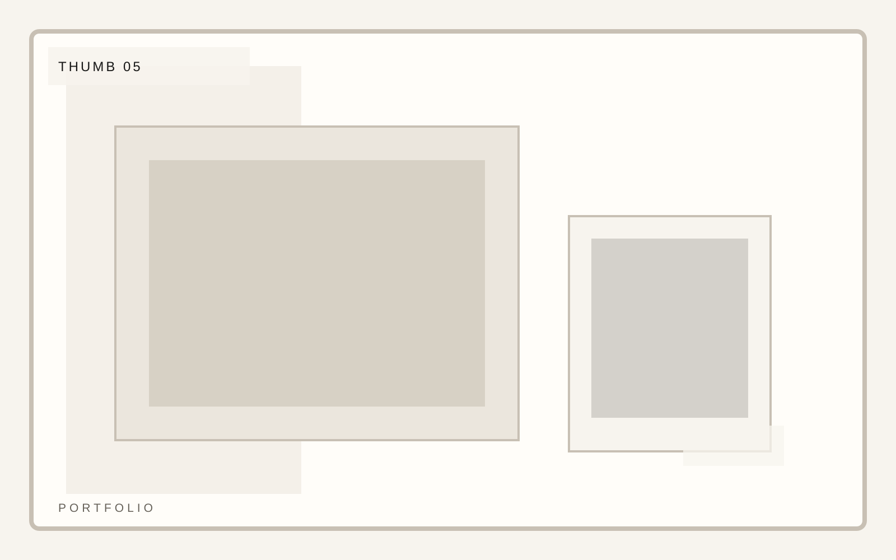

Practice
Editorial and portraiture
Photography portfolio
A portfolio template for photographers and image-makers who need rigorous composition, project rhythm, and clean editorial restraint. The index must feel edited before anyone clicks into a project.
Photography portfolio
The project list should read like a curated index. The spacing should imply editing judgment before any user clicks.


